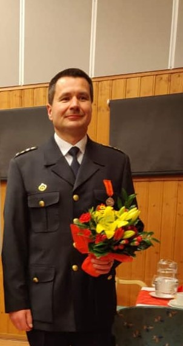
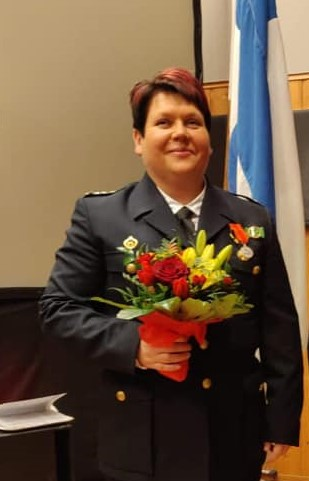
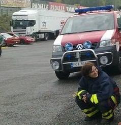
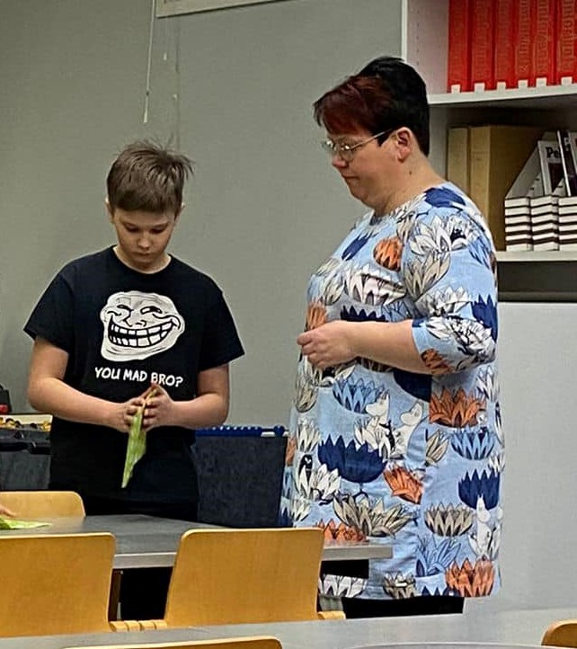

Yhdistyksen osastot
Hälytys osasto
Hälytysosaston sammutusmiehet, sukupuoleen katsomatta, vastaavat sammutus- ja pelastustehtävien hoitamisesta.
Hälytysosasto on palokunnan pääosasto, joka vastaa Kanta-Hämeen pelastuslaitoksen kanssa tehdyn palokuntasopimuksen velvoitteiden hoitamisesta.
Hälytysosastolla on 10 minuutin lähtövalmiusaika, joka tarkoittaa sitä, että hälytykseen lähtee 10 minuutissa sopimusvahvuuden edellyttämä henkilömäärä (1+3). Toimintavalmius on yllä 365 päivää vuodessa.
Hälytykset tulevat hälytysvasteesta riippuen joko samanaikaisesti kun pelastuslaitoksen päätoimiselle henkilöstölle, tai myöhemmin, mikäli kohteeseen menevät yksiköt tarvitsevat lisäapua. Hälytysosasto voidaan hälyttää myös etupainotteisesti varikkovalmiuteen päällekkäisten tilanteiden varalta, mikäli päätoiminen henkilöstö ja sen kalusto on sidottu pidemmäksi aikaa omaan tehtäväänsä
Hälytysosasto tarjoaa jäsenilleen haasteita ja elämyksiä, nykyaikaisen pelastuskaluston ja -varustuksen sekä antoisaa yhdessäoloa. Vastaavasti edellytämme vastuuntuntoa, riittävää harjoitteluaktiivisuutta sekä oman fyysisen kunnon ylläpitämistä.
Päästäkseen mukaan pelastustoimintaan on jokaisen hälytysosaston jäsenen suoritettava hyväksytysti pelastustoiminnan peruskurssi. Tämän jälkeen lisäpätevyyttä haetaan mm. savusukellus-, pelastustyön-, vaarallisten aineiden -, öljyvahingontorjunta- ja ensivastekursseilta. Lisäksi osa jäsenistöstä suorittaa yksikönjohtajan pätevyyteen oikeuttavan yksikönjohtajakurssin. Ylläpitääkseen hälytysvalmiutta hälytysosasto harjoittelee säännöllisesti viikkoharjoituksissaan erilaisten tilanteiden varalle.
Nykyaikaisen palokunnan toiminta ei sisällä pelkästään sammutustoimintaa, vaan myös liikenneonnettomuuksien pelastustoimintaa, vahingontorjuntatehtäviä kuten myrsky- ja vesivahinkoja sekä ensivastetoimintaa. Näitä tehtäviä varten palokuntaamme on saatu normaalien sammutus- ja pelastusvälineiden lisäksi mm. hydrauliset pelastusvälineet ja lukuisia muita erikoistyökaluja.
Hälytysosasto suorittaa myös tehtäviä, jotka vaativat palokunnan erikoiskalustoa ja taitoja. Tällaisia ovat mm. turva- ja ensiapupäivystykset, tulityövartioinnit sekä alkusammutuskoulutukset.
Nuoriso-osasto
TKS VPK:n nuoriso-osasto tarjoaa nuorille
harrastuksen, jossa kohtaavat paloalan nuorisokoulutus ja mukava yhdessäolo.
Palokuntanuorisotyön tavoitteena on antaa nuorille valmiuksia ja taitoja toimia arkielämän
yllättävissä tilanteissa.
Nuoriso-osasto kokoontuu normaaleihin viikkoharjoituksiin koulujen työaikoina
Paloasemalla keskiviikkoisin kello 18:00-20:00. Koulutus nuorilla painottuu paloalan
perustietojen ja -taitojen kehittämiseen nousujohteisesti. Harjoittelemme hyödyllisiä
kansalaistaitoja kuten ensiapua, alkusammutusta ja avun hälyttämistä. Lisäksi teemme
tutustumiskäyntejä, urheilemme ja kilpailemme. Muuta toimintaa ja kohokohtia on yhteiset
leirit ja kilpailut muiden palokuntien palokuntanuorten kanssa.
Nuoriso-osaston ikärakenne koostuu 8-16 vuotiaista tytöistä ja pojista. Nuoremmille ja
vanhemmille nuorille pyrimme harjoituksen aiheen huomioiden pitämään kullekin
ikäryhmälle soveltuvat harjoitukset. Vanhemman pään nuorten koulutus valmistaa heitä
hälytysosastoon siirtymiseen.
Osaston kouluttajina ja ohjaajina toimivat TKS VPK:n omat kouluttajat, jotka suurimmaksi osaksi ovat itsekin lähtöisin palokuntanuorista.
Toiminta on pyritty pitämään maksuttomana ja nuori saa käyttöönsä henkilökohtaiset
suojavarusteet. Jos olet kiinnostunut nuoriso-osaston toiminnasta, ota yhteyttä nuoriso-osaston johtajaan.
Nais-osasto
Palokuntanaistyön tarkoituksena on tukea palokuntien toimintaa, herättää ja edistää jäsenten myönteistä suhtautumista palontorjuntaan ja yleiseen turvallisuuteen liittyvää tietoutta kansalaisille. Palokuntanaistyön tarkoituksena on myös antaa palokuntanaisille tietopuolista ja käytännöllistä pelastusalan opetusta ja harjoitusta, jotta he pystyvät toimimaan turvallisesti palokuntatoiminnassa, kasvamaan tehtävässään sekä kehittämään ja toteuttamaan itseään siinä.
Palokuntanaistyö on tunnettu ja tärkeä osa palokunnan aktiivista, laadukasta ja monipuolista vapaaehtoistoimintaa: Palokuntanaiset lisäävät lähiympäristönsä turvallisuutta yhteistyössä eri toimijoiden kanssa. Palokuntanaiset suorittavat sopimuspalokunta velvoitetta TKS VPK ry:n kautta Kanta-Hämeen pelastuslaitokselle hälytysmuonituksena.
Tuemme nuoriso-osaston toimintaa, lisäksi osallistumme palokuntanuorten leireille erilaisissa toimihenkilö tehtävissä kuten kanttiinissa, keittiössä ja toimistossa. Osallistumme alueelliseen, liitto ja valtakunnalliseen palokuntalaistoimintaan ja koulutuksiin sekä seminaareihin ja foorumeihin.

Mikko Lindeman
Palokunnan päällikkö

Hanna Sinkkonen
Hälytysosaston johtaja

Tiina Sinkkonen
Nuoriso-osaston johtaja

Hanna Sinkkonen
Naisosaston johtaja